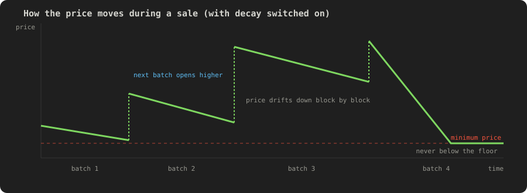
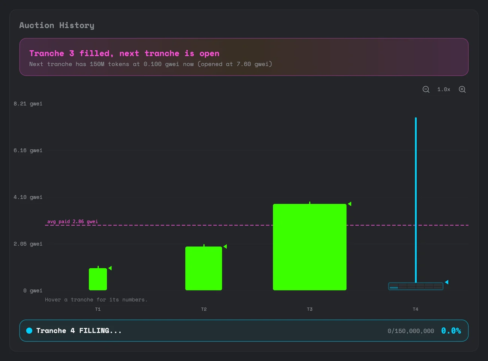

Pricing: batches, growth and decay
A sale doesn't run at one price. It's split into batches, and the price moves in two ways: it steps up at each new batch, and it can drift down inside a batch.

Batches
The launcher sets the first batch's size and opening price, then two growth settings: how much bigger each batch is than the last, and how each batch's opening price compares to where the previous batch closed. Both can be anywhere from half to three times.
With the default settings, each batch is twice the size and twice the price of the one before. That means most of the money is raised in the last few batches. At the defaults, the last batch alone is about three quarters of the total.
Decay
If the launcher sets a price decay, the price falls a little every block from the moment the batch opens, until the batch sells out or the price reaches the minimum. Buying doesn't pause it or reset it. Only a new batch resets it.
With decay at zero, which is the default, the price is flat inside each batch and only changes when a batch closes.
The price never decays below the minimum the launcher set, so it can't fall to nothing while a batch waits for buyers.
What this means when you buy
- Your buy fills straight away at the current price. There's no bidding and nobody can outbid you.
- If your buy finishes a batch, the leftover ETH comes back in the same transaction.
- Your buy is capped at the open batch's price unless you tick Buy at any price.
- If the sale has decay, waiting can get you a lower price, but the batch may sell out first.
Reading the chart

- Each bar is a batch. Its height is the price and its width is its size, so bigger batches are wider.
- Green bars have filled. The blue bar is the batch you'd buy in now, and it fills up as people buy.
- The dashed line is the average price paid so far. That's where trading would open if the sale sold out now. See The pool at sellout.
- The banner above the chart tells you what just happened, for example that a batch has filled and the next is open.
- Hover over a bar for its numbers, and use the zoom buttons to look closer.
The Auction Progress bar under the price is the share of the 500 million tokens on sale that have been bought. At 100% the sale has sold out.